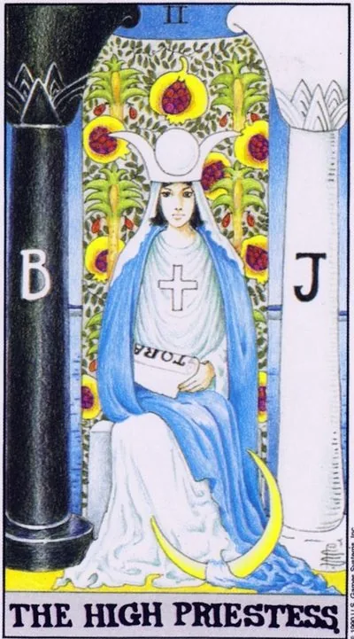

Major Arcana · II
IIThe High Priestess
The answer is already within: silence, intuition and knowledge that comes before words – the card advises you to stop looking for logic in other people’s conclusions and carefully listen to your own quiet voice.
Archetype and core meaning
The priestess sits between the white and the black pillars, Yachin and Boaz, behind her back a veil of grenades and palm trees, and she holds a half-hidden scroll of law. She doesn't answer questions -- she knows the answers before they're asked. It's the lass of the subconscious: the part of the psyche where everything we know how to forget is stored.
In the layout, the card suggests stopping and listening. The solution does not require another analysis, it is already ripe somewhere below the level of words, and its first manifestation will be a quiet "I just feel." The priestess patronizes secret knowledge, dreams, omens and random encounters that carry meaning. Her condition is respect for silence: what is revealed too loudly loses its power.
Daily life
A day of quiet signals: write down your dreams, notice repetitive numbers and phrases, trust your first impressions of people. Anything that is done without noise is good -- chores, reading, planning without public announcements. It's not a time to reveal your plans: let them mature. If someone presses for an instant response, take a pause -- the Priestess is on the side of those who know how to say "I'll think." In the evening, dedicate to the restoration: bath, music, silence.
Work and career
In work, the card points to hidden information: unspoken partners' motives, unsubscribed conditions, a job that has not yet been announced. It's now more profitable to be the most informed than the loudest -- listen, write, match. Research, analytics, everything confidential are going well. If your project is yours, keep it quiet until it's ready: premature discussion attracts competitors and skeptics faster than support.
Relationships
Here, the Priestess is a deep, almost wordless understanding, or rather a beautiful inaccessibility that beckons. To single people, it often means a person with a rich inner world who will have to be solved long and carefully. In a pair of cards, the card calls for a subtle hearing: the loved one speaks not so much in words as in moods, and it is important now to catch this.
Health
The moon controls fluids and rhythms: keep an eye on sleep, drinking patterns, and body cycles. The card is favorable for diagnosing subtle, implicit natures -- examinations, counseling, psychotherapy: the latent is now easily manifested. Mind-calming practices -- meditation, breathing, yoga nidra -- are useful.
Spiritual meaning
The way of the camel, the Himel, crosses the Abyss between Kether and Tiferet: the Priestess is the guardian of the passage to where not everyone is allowed. The moon gives her the gift of reflecting light differently through a dream, a symbol, an image. In practice, it is the lark of divination: working with a mirror, water, cards, dreams. Meditation teaches her to distinguish the voice of intuition from the voices of fear and desire - the first sounds calm and does not rush anywhere. The commandment of the arcan is to know, but not give away.
Silent inner voice: Intuition is ignored for the sake of the “right” arguments, and secrets from defense turn into a fog of omissions, in which everyone around you wanders – including yourself.
Archetype and core meaning
The inverted Priestess is an inner voice that is muted, and the person ignores the premonitions because the logic is "righter," and then marvels at the obvious trap into which his own feelings have led him. The other pole is a glut of mystery: secrets, inconsistencies, the control of people by hints, when loved ones are forced to live in fog and guesswork.
Sometimes the card shows the repressed: dreams, anxiety and desires that ask for attention and are forbidden. The mind without exit begins to speak with body language — insomnia, flashes, obsessive thoughts. The Arcana advises honest dialogue with itself: diary, therapy, silence without a phone. Intuition does not turn off when not listened to, it simply turns to the language of problems.
Daily life
On a day when the internal compass lies: They want to be wrong, they want to be wrong, decisions are made out of spite or stubbornness. Postpone important elections - They're made out of anxiety now. The opposite is also noted: The person drowns out the “strange anxiety”, and it turned out to be a true instinct. Practice a little honesty with yourself: To write down a dream, to admit envy, to call fear by its name. No phone or news tonight The noise of the information is especially misleading today.
Work and career
At work, the card warns you that the information you lack is there, and it's being deliberately held. Read the contracts in fine print, clarify what's left behind, don't rely on verbal assurances. There's also the possibility of your own superficiality: the decision is made at the top, the details are not studied, and it will come out sideways.
Relationships
In a relationship, the inverted Priestess is a fog: ineffects, secret correspondence, "sucks itself" instead of talking. One of the two knows more than he says, and this asymmetry erodes trust faster than open conflict. For singles, the card indicates fascination with the image, not the person: the fantasy of the partner replaces the partner himself; the medicine is to say the uncomfortable out loud; even if the truth turns out to be bitter, it will stop the slow suffocation of the omissions.
Health
The physical card is related to repressed states: psychosomatics, hormonal disruptions against chronic stress, sleep disturbances and cycles. The typical story is "nothing seems to hurt, but there is no strength": the body signals accumulated, and the list of tests finds nothing. Don't brush it off - start with the nervous system: regimen, therapy, load reduction.
Spiritual meaning
The spiritually inverted way of Gimel is an attempt to cross the Abyss without preparation: practices deeper than readiness give instead of insight a clouding. The card points to a blocked channel of perception: the person is either afraid of his abilities or, conversely, gives fantasies for revelations. In both cases, the cure is one - grounding and discipline: a dream diary with fact checking, simple practices, a mentor with sober eyes.
🌿 In brief
The main idea
The priestess is knowledge that has not yet become a ready answer. If the Magician gets the idea as if it were the whole thing, the Priestess would rather recognize something by the inner feeling, and she would see a connection between the phenomena that cannot yet be explained in words.
How it manifests
The main qualities of the card are intuition, observation, the ability to notice hidden causes and accept the existence of what is not yet possible to explain. The priestess can wait. Sometimes the best way to act is to do nothing until the situation itself shows the right moment.
In a relationship
Emotionality, a subtle feeling of a partner, mystery and the ability to adapt.
Work.
The card shows you how to work with information, confidential data, analysis, customers and situations where you need to first understand and then act.
The shadow side
Intuition without reason becomes guesswork; mystery becomes lies; caution becomes manipulation.
Feature of the school
At the School of Modern Tarot, the Priestess is connected to Pluto, and the card is built around hidden knowledge, the subconscious, Isis, oral and written tradition.
📜 In detail — lecture extracts
Essence of the card
The High Priestess here is the hidden potential and access to the universal repository of secret knowledge: she can share, but she doesn't need the information. Her mechanism is the shchina: not the ready-made insight, like the Magician (a ready-made idea falls into her head), but the sense of recognition is the interconnection of things that cannot be explained, but can be referred to. She is silent and speaks in half-hints (the oral Torah next to the written one), gives information in doses and works as a "provocateur": any word is the trigger of events. This is the yin - "femago" - "the female version of the Magician" with the energy of the magician, which is not directly applied to the power of Pluto.
Upright position
- Schools work without inverted cards in the layouts ("no bad or good cards" - they make such attitude of the person), so "straight" - the strengths of the card:
- Intuitiveness – the question “what to rely on?” the answer is: intuition.
- - acceptance of the alternative - black and white pillars; "truth - a combination of points of view" (one's own + another's point of view);
- Mystery, secrets - half-hint spurs interest;
- Search for hidden causes – feels invisible connections
- - acceptance of the unknowable - faith by indirect signs ("walks like a duck and quacks - means a duck");
- Conscience is the inner knowledge of good and evil ("conscience is the best controller").
- Relationships: emotionality (moon, water - emotions from the depth), balance ("my white, your black" - search for gray scale), "consider the place" - male intuition; adaptability - "sitting by the sea and waiting for a convenient situation"; gender role, initiation of a partner to action, choice of options (garnet);
- - work: potential and creativity, inspiration in the process of work, slow analysis ("haste is important only when catching fleas"), objectivity and understanding of the client, working with other people's data, confidentiality, corporateness ("friend or stranger"), the desire to help;
- Self-development: the subconscious (Freud, Jung – collective unconscious, “the boundless Nile”), dreams as a storehouse of knowledge, the assessment of the situation as it is, occult science;
- Often denotes a woman; selfless help for the sake of another, like Isis and Basilis.
Negative meaning
- Little is known about the same qualities:
- Intuition to the detriment of reason: guessing “without brainwork”, although they should work in pairs;
- - extremes instead of adopting alternatives: "all men are goats, all women are stupid", "all in a white coat, and everyone around is wrong";
- - secrecy as lies and blackmail: withholds information for the sake of a convenient moment, is ready to use knowledge to harm;
- Fatalism and Mysticism: Conspiracy Theory, Explanation of Everything to the Secret
- pettiness, capriciousness, criticism (straw in someone else’s eye);
- Hyperemotionality ("Neal spills too wide"), "oh, that's it," "girlishness" ("I'm blonde, I have paws"), extreme gender role up to sexism/feminism;
- - work: inability to apply knowledge ("like a dog: understands everything, can not say"), impracticalness, whims about the atmosphere, concessions to the client with suffering after, excessive secrecy, denial of individuality, trouble-free manipulation;
- - avoidance of reality (more carefully with meditation), somnambulism, obsessive help, "black witches" - the infusion of ritual mysticism on the image.
School emphases and distinctive points
- - Works with an English-language deck, prefers the name "High Priestess".
- His Kabbalah is practical: Bina (understanding, access to knowledge) + Malkut (kingdom, matter) = the arrival of information from the universal repository into our world.
- The Torah on the scroll: written and oral; the priestess shares knowledge allegorically - like Pythia in the Matrix: "You will know for yourself, a little later."
- The pillars of Boaz and Yachin are yin/yang in the European-Jewish style: "in it is power" (immutability) versus "let it affirm" (change).
- The tiadem is not the phases of the moon, but the horns of the sacred cow of Isis ("we will not invent ourselves"); the ank is the uroboros and the repeatability of life, the key after initiation; the pomegranate is a thousand grains, a universe of possibilities.
- Mythology: Isis, the one who stands at the throne, resurrected Osiris (the prototype of the Madonna), Russian equivalent of Vasilisa the Wise / Princess the Frog: the daughter of the sea king, changes appearance, “morning of the evening is wiser”, stock “in the sleeves”. Hollywood: Trinity (Neo is a magician, Morpheus is a hierophant) and Sarah Conor from Terminator 2.
- - Astrology of his system: Priestess paired with Magus - Pluto and Mars, the first violin in the 8th house / Scorpio; "there are no evil planets": Pluto is a guardian, "not evil, but at work", as a strict coach.
- The hammer metaphor: they can hang up the TV, or they can break their heads; mystery is appropriate when a man is passionate, but not at an interview in a firm with strict security.
- Examples: a selection of 28,000 teas (paralysis from a sea of options); Google’s IT offices with sofas and PlayStation; the “client is king and god” of the Priestess.
- Banshaf's advice is, "Don't do anything, let events just happen... Intuition tells you when to get active again." Waiting for the weather by the sea is the card's strength.
- - No yes/no, the cards are about the unformed future, for him it is the most difficult, bottomless card - people want specifics, and she "guess it yourself"; the Empress next - the same grenade, but material.
Keywords
- Hidden potential; shhinah (recognition); intuition, guessing; mystery and half-hint; yin - "female version of the Magician"; your - alien (corporate); grenade - a sea of possibilities; waiting for the weather by the sea.
- ---